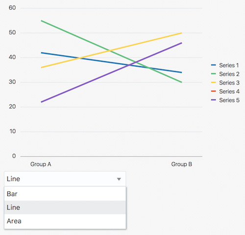

Apache NetBeans (incubating)
Apache NetBeans (incubating)Just released!
This document provides a step-by-step set of instructions guiding you through the process of connecting components to each other via data bindings, as provided by Knockout.js, which is the data binding library included in the Oracle JavaScript Extension Toolkit (JET). JET empowers developers by providing a modular toolkit based on modern JavaScript, CSS3, and HTML5 design and development principles.
Using the Oracle JET Cookbook
In this section, you copy/paste Oracle JET components into your JET applications.
-
As described in Using the Oracle JET Cookbook, you can copy/paste Oracle JET components from the Oracle JET Cookbook into your Oracle JET application. At this stage, you should have the Bar Chart component in your application, as shown below:

-
Also add a Select component to your application, in the same Oracle JET module where the Bar Chart is found:
-
Read the Select component recipe in the Oracle JET Cookbook and copy the recipe into your application, then take the steps below to tweak the code.
-
Tweak the HTML so that the user will be able to select different types of charts. Notice that not all the HTML from the recipe is needed. Nothing more than the below should be added to the JavaScript file for usage with the Select component defined above.
-
<form id="form1">
<select id="basicSelect"
data-bind="ojComponent: {
component: 'ojSelect',
value: val}">
<option value="bar">Bar</option>
<option value="line">Line</option>
<option value="area">Area</option>
</select>
</form>*
Notice that the HTML makes use of a value named val . That gives you the information needed to determine which part of the JS tab of the recipe you need to tweak and copy to your JavaScript file:
self.val = ko.observableArray(["bar"]);*
Make sure to include the reference to the Select component at the end of the define block, copied from the JS tab in the recipe:
'ojs/ojselectcombobox'3. In the browser, check that the application looks something like the below, that is, you should see a Bar Chart component and a Select component:

In the next section, you’re going to bind the two components together.
Connecting the Select Component to the Bar Chart Component
In this section, you connect the components together enabling the user to select the chart type.
-
Notice in your HTML file that the Bar Chart component has its
typeproperty hardcoded to'bar'. -
Notice in your HTML file that the Select component has its
valueproperty set to the two-way binding arrayval, defined in your JavaScript file. -
Change the value of the Bar Chart component’s
typeproperty toval()[0]. That means that when thevalarray changes, the first value defines the type of the Bar Chart, which will immediately update itself to the new value. -
In the browser, switch to a different chart type in the Select component and notice that the Bart Chart component automatically updates itself:

You have now connected two Oracle JET components together. When the user makes a choice in the Select component, the Bar Chart automatically reflects the current choice.
Displaying a Current Value
In Oracle JET applications, a common construction is to display the current state of a value as follows, using a span tag to do so:
Selected: <b><span *data-bind="text: val"*></span> chart</b>In the above, the text attribute of the span element is bound to the val property.
Add the above anywhere in your HTML file and notice that the browser now displays an updated text whenever val changes.
Connecting a Gauge to an Input Field
In this section, you’re on your own! As an exercise, instead of step-by-step instructions, you’ll be told to connect two Oracle JET components together.
-
From the Circular Status Meter Gauge recipe, copy a gauge into your Oracle JET application.
-
From the Input Text recipe, copy an input text into your Oracle JET application.
-
Connect the two components together so that the current value of the gauge is shown in the input field and so that the gauge reflects the current value in the input field. Experiment with the +
textInputbinding+, as follows:
<input type="text" data-bind="textInput: value, ojComponent: {component: 'ojInputText'}" />Let’s extend the scenario above and include ojButtons for increasing and decreasing the value:

The HTML for the above is as follows, take note of the click binding:
<button class="oj-button-primary"
data-bind="*click: up*,
ojComponent: {
component: 'ojButton',
label: 'Up'
}">
</button>
<button class="oj-button-primary"
data-bind="*click: down*,
ojComponent: {
component: 'ojButton',
label: 'Down'
}">
</button>Here is the business logic, to be put in the JavaScript file:
self.up = function() {
self.value(self.value()+1);
};
self.down = function() {
self.value(self.value()-1);
};Incorporate other Oracle JET components into your application and find ways of binding them together.
Next Steps
Work through the Live Examples and Tutorials on the Knockout.js site to familiarize yourself with the basic constructs and strategies provided by Knockout.js.
Congratulations! You have now learned the basics of using Knockout data bindings to connect components together.
See Also
For more information about support for Oracle JET and a variety of HTML5 applications in the IDE on netbeans.org, see the following resources:
-
"Learn" section on the Oracle JET site. A set of official Oracle JET learning resources.
-
Working with CSS Style Sheets in HTML5 Applications. A document that continues with the application that you created in this tutorial that demonstrates how to use some of the CSS wizards and windows in the IDE and how to use the Inspect mode in the Chrome browser to visually locate elements in your project sources.
-
Debugging and Testing JavaScript in HTML5 Applications. A document that demonstrates how the IDE provides tools that can help you debug and test JavaScript files in the IDE.